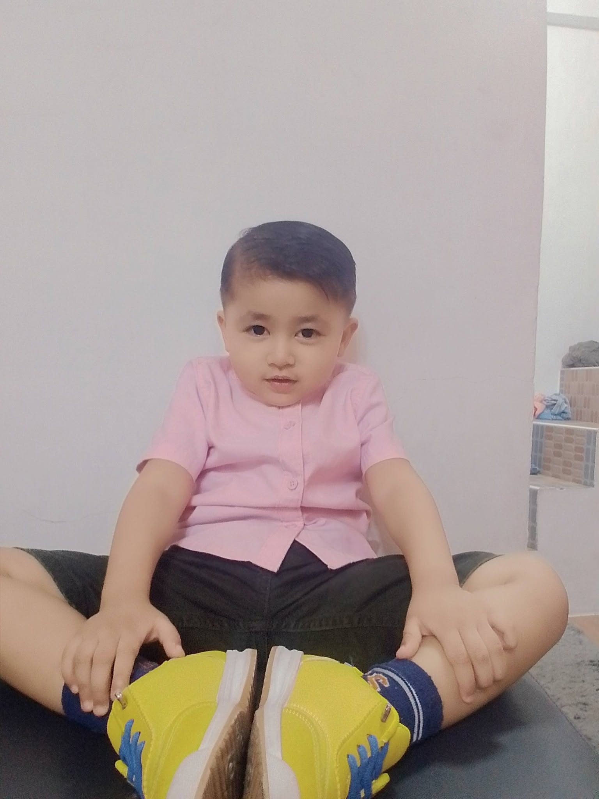
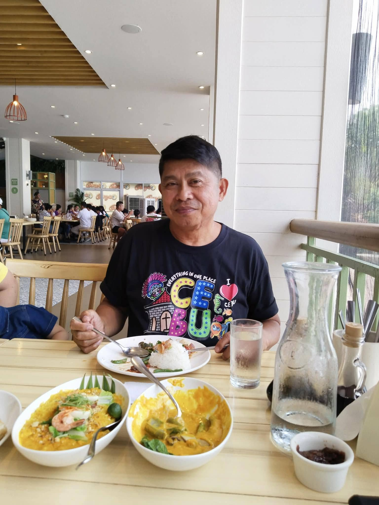
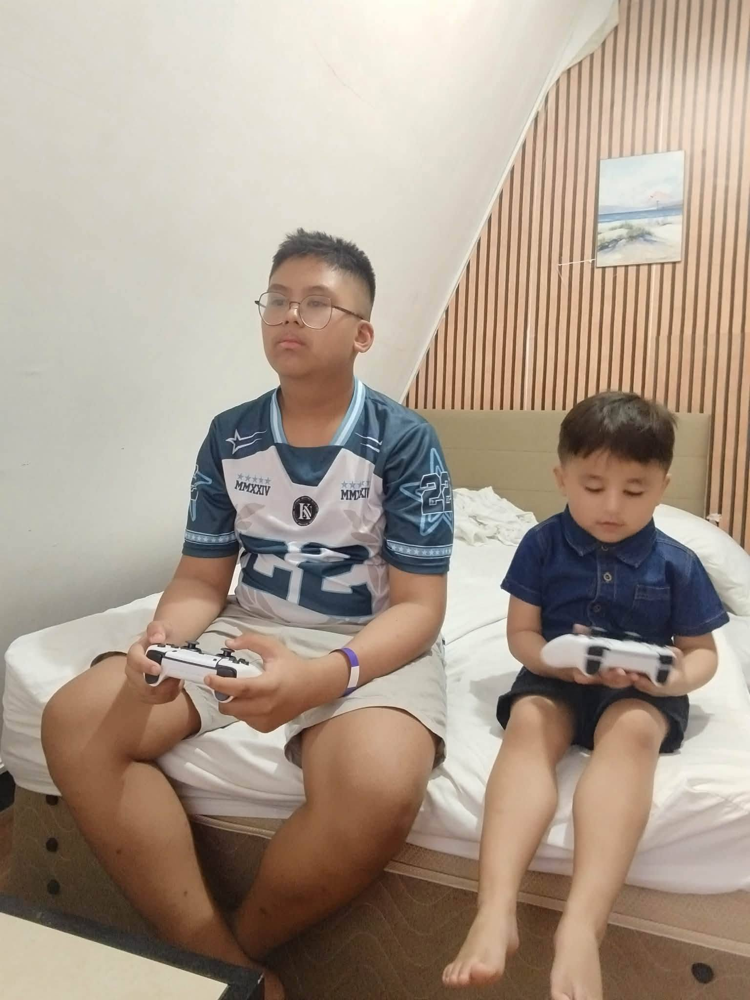
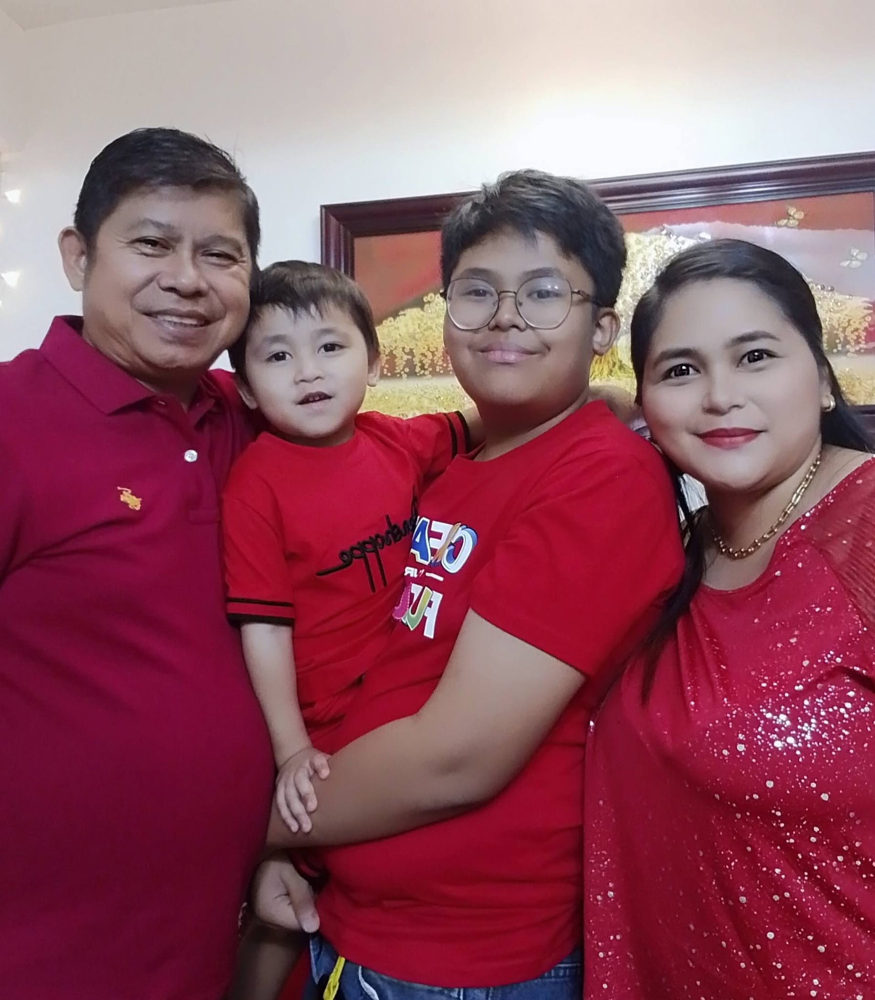

My brother, 4 years old, smart for his age though, might surpass me in terms of academics one day, and that I look forward to, though my laziness seems to have rubbed off on him.

My brother, 4 years old, smart for his age though, might surpass me in terms of academics one day, and that I look forward to, though my laziness seems to have rubbed off on him.

My dad, 2 jobs, one in the city hall and another as a small store owner, not sure what he does in the city hall though, he was also an ex-barangay captain.

Here I am again, this one's from my brother's birthday, the image shows our first time using a controller, cuz the resort had one we could borrow for free for some reason.
My mom also has 2 jobs, one in the barangay hall as part of the Medical Assistance Office or MAO, and a print shop, which is an extension of my dad's shop, we can print documents, t-shirts, mugs, etc. She's also a college student at PUP, online classes for HR if I remember correctly.

This was during New Years, a lot singing from them, didn't join though, not my strongest suit, tell 'ya that much, food was plenty, and at the end of the celebration, we refrigerated the food, for later use on January 2, which is my birthday.